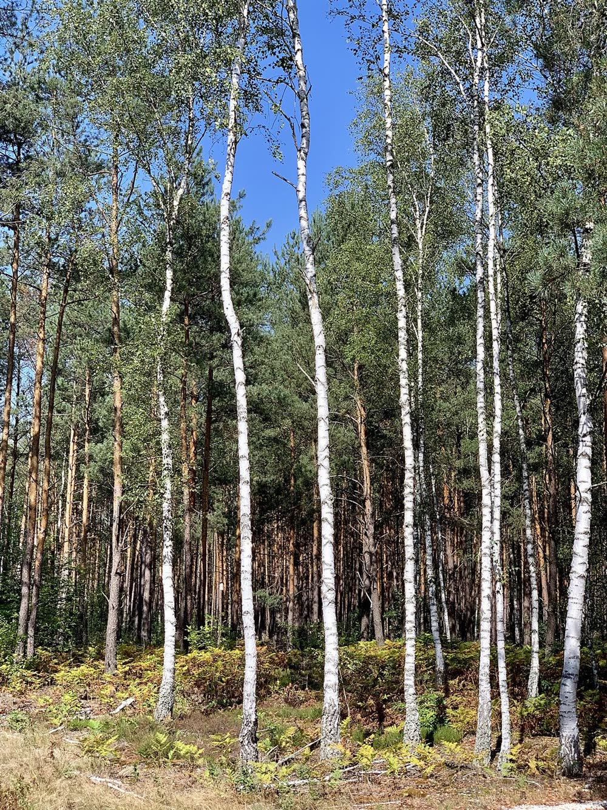
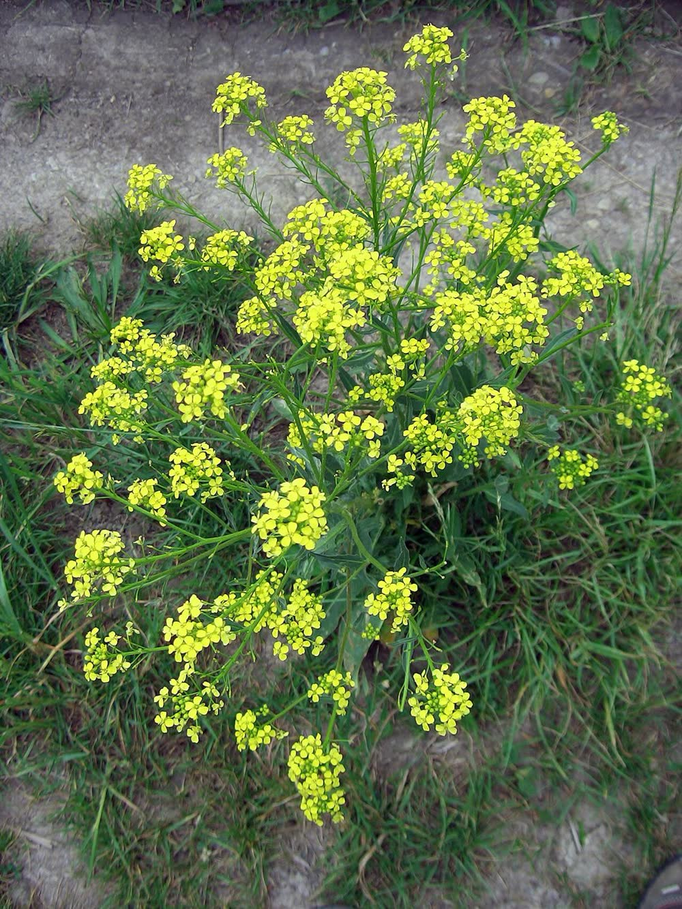
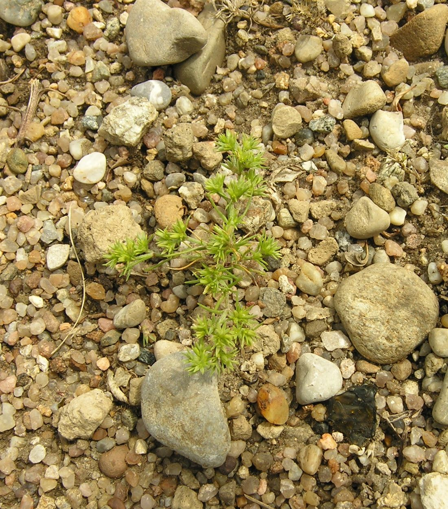
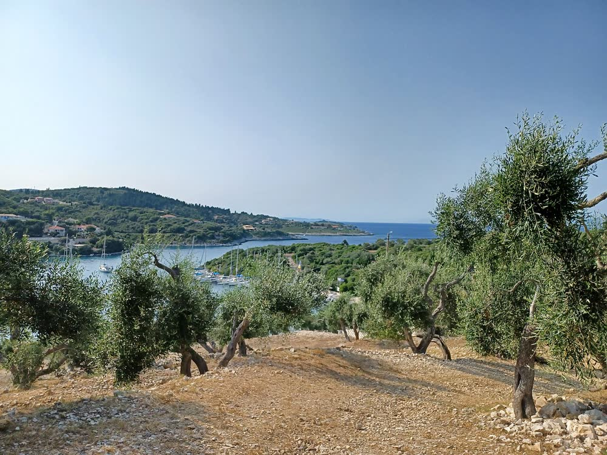
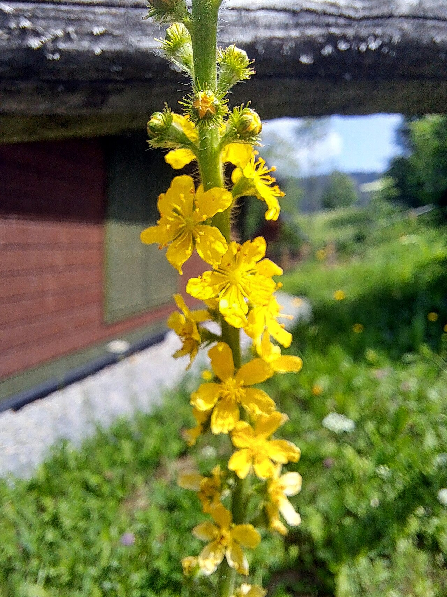
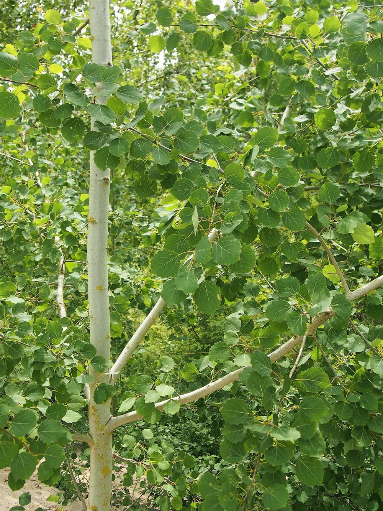
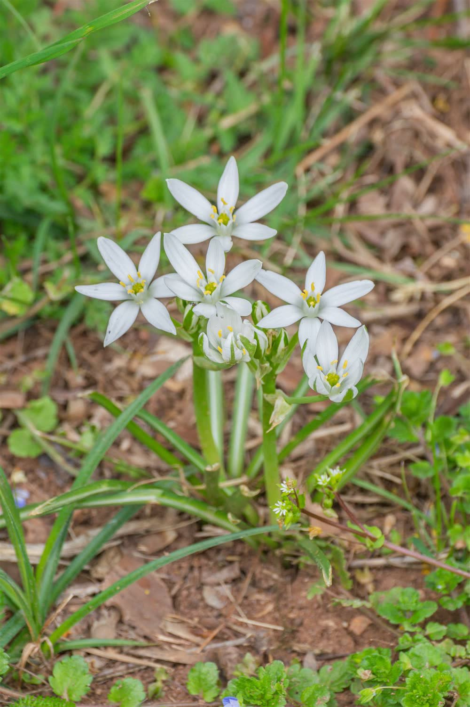

תמרה שעשוע — מטפלת מוסמכת בשיטת EBMT, פרחי באך ונוירופידבק. מלווה אותך במסע של ריפוי, העצמה ושחרור מדפוסים שכבר לא משרתים אותך.
מטפלת רגשית מוסמכת המתמחה בשיטת EBMT — שיטה ייחודית שפותחה בישראל, המשלבת גוף, נפש ואנרגיה לתהליך ריפוי עמוק ומשמעותי.
בנוסף, אני מטפלת בפרחי באך ומסייעת במצבים של הפרעות קשב וריכוז באמצעות טיפול מתקדם בנוירופידבק — שיטה לא פולשנית המבוססת על אימון מוחי.
שילוב ייחודי של שיטות טיפול מוכחות לתוצאות עמוקות ומשמעותיות
שיטה ישראלית חדשנית — Emotional Body Mind Therapy — המאפשרת שחרור חסימות רגשיות ואנרגטיות דרך עבודה עם הגוף והנפש יחד.
טיפול טבעי ועדין המבוסס על 38 תמציות פרחים שפותחו ע״י ד״ר אדוארד באך, לאיזון מצבים רגשיים.

טכנולוגיה מתקדמת לאימון מוחי — טיפול לא פולשני בהפרעות קשב וריכוז, שמלמד את המוח לווסת את עצמו בצורה יעילה.
כל מסע מתחיל בצעד הראשון — הנה מה שמחכה לכם
פגישה ראשונית ללא עלות להכרות, הבנת הצרכים שלכם והתאמת הטיפול המתאים ביותר.
מיפוי מעמיק של המצב הרגשי והפיזי, ובניית תוכנית טיפולית מותאמת אישית.
סדרת מפגשים מעמיקים בהם נעבוד יחד על שחרור, ריפוי וצמיחה בקצב שנכון עבורכם.
תחושת קלות, בהירות ואיזון. כלים מעשיים שילוו אתכם גם אחרי סיום הטיפול.
38 תמציות פרחים טבעיות שמסייעות לאיזון מגוון מצבים רגשיים
שחרור מפחדים ידועים ולא ידועים

חזרה לשמחת חיים ואופטימיות
מציאת שלווה פנימית ושקט

חיזוק הביטחון בקבלת החלטות

חידוש אנרגיה ומוטיבציה

חיזוק גבולות רגשיים בריאים
חיבור מחדש לעצמי ולאחרים
פריחה והגשמה עצמית
מאמרים מקצועיים שיעזרו לכם להבין את עולם הטיפול הרגשי והאנרגטי
הכירו את שיטת ה-EBMT — שיטת טיפול ייחודית שפותחה בישראל, המשלבת גוף, נפש ואנרגיה.
לקריאה ← פרחי באךמה הם פרחי באך, איך הם עובדים ולמי הם מתאימים? כל מה שרציתם לדעת על 38 התמציות.
לקריאה ← נוירופידבקאיך נוירופידבק מאמן את המוח לווסת את עצמו — ללא תרופות וללא כאב.
לקריאה ← מדריך להוריםסימנים, אבחון, אפשרויות טיפול וטיפים מעשיים להתמודדות יומיומית עם ADHD.
לקריאה ← טיפול רגשימרגישים שמשהו תקוע? מדריך שיעזור לכם להבין איזו שיטה מתאימה לכם.
לקריאה ←
חרדהלמדו לזהות את הסימנים ואת דרכי הטיפול המוכחות שיכולות לשנות את חייכם.
לקריאה ← ADHD מבוגריםרבים לא יודעים שיש להם ADHD עד גיל מבוגר. סימנים שכדאי להכיר.
לקריאה ← שחיקהשחיקה היא לא רק "עייפות מהעבודה". הכירו את הסימנים ואת הדרך חזרה לאיזון.
לקריאה ←
אינטלגנציה רגשיתלמה היא חשובה יותר ממנת המשכל וכיצד מפתחים אותה בכל גיל.
לקריאה ← אחרי לידהשכיח הרבה יותר ממה שמדברים עליו. שיטות טיפול טבעיות ותמיכה.
לקריאה ←תמרה היא מטפלת יוצאת דופן. בזכות הטיפול בשיטת EBMT הצלחתי לשחרר דפוסים שליוו אותי שנים. אני מרגישה אדם חדש.
מ.ש, תל אביבהבן שלי עבר טיפול בנוירופידבק אצל תמרה. השינוי בריכוז ובהתנהגות שלו הוא מדהים. היא מקצוענית עם לב ענק.
ר.כ, רעננהפרחי הבאך שתמרה התאימה לי עשו פלאים. כבר אחרי שבוע הרגשתי שינוי משמעותי ברמת החרדה והשינה שלי. ממליצה בחום!
ל.א, הרצליהשנים של לימוד, התמחות ופרקטיקה — כדי שתקבלו את הטיפול הטוב ביותר
הסמכה מלאה בשיטת Emotional Body Mind Therapy — שיטת טיפול ישראלית ייחודית המשלבת גוף, נפש ואנרגיה.
הסמכה מוכרתהסמכה בינלאומית בטיפול בפרחי באך — 38 תמציות פרחים לאיזון רגשי וטיפול טבעי ללא תופעות לוואי.
הסמכה בינלאומיתהכשרה מקצועית בנוירופידבק לטיפול בהפרעות קשב וריכוז (ADHD), חרדות, הפרעות שינה ושיפור ביצועים.
הכשרה מקצועיתהצעד הראשון הוא הכי חשוב — אני כאן בשבילכם
מטפלת רגשית מוסמכת בשיטת EBMT, פרחי באך ונוירופידבק. מוזמנים ליצור קשר לשיחת היכרות ללא התחייבות.